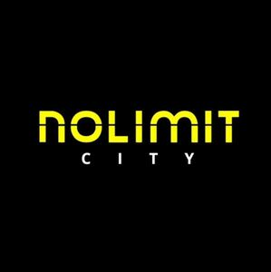

Trade Mark Journal No.2025/043 24 October 2025
WO0000001866294 (9,28,41)
Office of origin: European Union Intellectual Property Office (EUIPO)
Date of International Registration:24 April 2025
Date of designation in the UK:
24 April 2025

The mark contains the colours yellow, white and black.
International priority date claimed: 28 October 2024
(European Union Intellectual Property Office (EUIPO))
(019097290)
- Class 9
- Software; interactive computer systems; computer programs for using the internet and the worldwide web; computer programmes for use in telecommunications; application software; computer programs, downloadable; computer software for database management; computer software for advertising; application software for mobile phones; mobile software; multimedia software; downloadable software; databases; media content; downloadable computer game programs; computer gaming software.
- Class 28
- Toys, games, and playthings; jokes (play things); playing cards; amusement game machines; chips and dice [gaming equipment]; electronic games; coin-operated games; amusement machines, automatic and coin-operated; bill-operated gaming equipment; playing card shuffling device; slot machines [gaming machines]; arcade video game machines; board games; arcade games; markers [counters] for playing games.
- Class 41
- Casino, gaming and gambling services; providing casino facilities [gambling]; leasing of casino games; entertainment services for the operation of computerised bingo; providing of casino and gaming facilities; conducting multiple player games of chance; betting services; entertainment services; game services provided online from a computer network.
Nolimit City Limited
Representative: ADVOKATBYRÅN GULLIKSSON AB, Carlsgatan 3, SE-211 20 Malmö, SWEDEN